热点2022年8月|从建军节到抗旱一线，致敬巾帼红

编辑：杜舒懿
数据来源：闪闪
0
1八一建军节|致敬人民秭娣兵
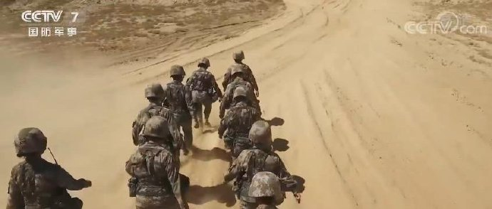
哪些产品设计忽视了女性？
女性的一生，是被忽视的一生。你所习以为常的一切，总要到被打破那天，才发现是别人的难以忍受。
从初潮开始每个月都要忍受的月经，是长达几十年的噩梦，不能运动、不能请假、不能正常工作，还总被其他人嘲讽矫情。
长裙、短裤、半袖、外套，无论是潮流的模样还是基础的款式，好像总是少了口袋的参与，无处安放的手机和叮当乱响的钥匙，变成了恼人却必要的多余。
从坐在驾驶位的第一天就意识到身体和座位是有多么地不契合，够不到油门的脚和努力抻长的脖子，滑稽得像小丑在演独幕剧……
身为女性的你我，这样哭笑不得的故事能讲出太多太多。那些零零散散惹人不舒服的细节，好像并没有严重到让世界毁灭；可又像是漫长的人生里一处总也不会愈合的口腔溃疡，在心底泛出旷日持久的锐痛。
你是否想过，这本不是身为女性一定要经历的生活？或许，只要我们说出来，只要我们被听到，下一个设计，就可以对你我友好得多？
生育损伤| 不致命但很烦人的慢性病
你（可能）会永久的尿失禁。大笑、打喷嚏、原地跳跃都会让你尿失禁。
——SHANNON BRASWELL
并不是所有人都会发产后尿失禁。据调查，中国女性中压力性尿失禁的发生率大概是18.9%。但不要小看尿失禁，它可是威胁妇女健康的常见慢性疾病，而且在某些场合会让妈妈们特别尴尬。
曾经汤唯就因为产后频繁的上厕所被雷佳音在节目中爆料，没绷住一下子就哭了。这不就是生产后却要尽快复工的职场妈妈们的真实写照吗？
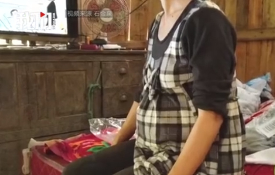
【江西安福幼儿园杀人案遇害者：她们是老师】
自8月4日以来，江西吉安安福县心连心购物广场门前，每天都有人来摆放花束。花海背后，是安福县儿童之家幼儿园。8月3日上午，一名歹徒持械窜入幼儿园内行凶后逃窜，幼儿园的遇害者中4人身亡、5人受伤经救治无生命危险，歹徒在逃亡中遇车祸后抢救无效死亡。封面新闻记者从知情人士处获悉，案件遇害死者中两人是幼儿园的老师，其余为幼儿园暑托班小班的孩子。
“两位老师在保护幼儿过程中遇害。”安福县多位网友如此讲述。8月8日，安福县公安局政工室工作人员告诉封面新闻记者，案件目前还在调查，上述细节官方暂未认定。安福县委宣传部工作人员表示，目前不掌握相关情况。安福县殡仪馆工作人员表示，近期有很多人来电希望向4位不幸的师生致哀。从同事、学生的家长的回忆中，封面新闻试图拼凑出两位遇害老师的模糊形象。
黄老师 女，42岁
嘉女士的女儿2年前曾在儿童之家上小班，被黄老师照料，2022年暑假在儿童之家暑托上大班。嘉女士经常下班晚，黄老师会先帮她把孩子带回家，然后嘉女士去黄老师家接孩子，两人从陌生到熟悉。在嘉女士的记忆中黄老师善良、简朴、身材瘦小、乐于助人，衣着相当简单朴素，“爱身边每一个小朋友，总是远远地笑脸相迎。有一双很听话的儿女，女儿下半年读高中，儿子十岁，老公打工。”8月3日出事后，嘉女士给黄老师半小时内打了6个电话，均未获接听。
闻女士（化姓）是儿童之家幼儿园的老师，和两位遇害老师做了近5年同事。在闻女士的记忆中，黄老师非常善良。“冬天，有小朋友穿得衣服很少，感冒流鼻涕，黄老师除了帮小朋友擦鼻涕，还去找衣服给他们穿。学校的小朋友不能打骂，我们老师照顾这些小朋友，比照顾自己家的宝贝还要上心。家长们也都认可她的工作。”
黄老师的微信签名中写道：“人生最大的财富是健康。”
周老师 女，50多岁
万女士的儿子今年3岁，就读于事发幼儿园，右臂肌腱被嫌疑人砍断，腹部被划伤。据万女士儿子回忆，“幼儿园进了坏人，黄老师、周老师浑身是血倒在了地上。”万女士一般只在接送孩子的时候和周老师接触，她记得，周老师平常在儿童之家带小小班，暑假带小班，“她年纪看着挺大，像要当奶奶的人。”
在闻女士眼中，周老师是整个幼儿园的开心果。“她说话非常幽默，有她在，大家就好开心。周老师有一个儿子，她平常特别勤俭简约，不会多花一分钱，是幼儿园年纪最大的老师之一。”闻女士相信，面对歹徒黄老师和周老师都会主动去保护孩子。（来源：封面新闻）
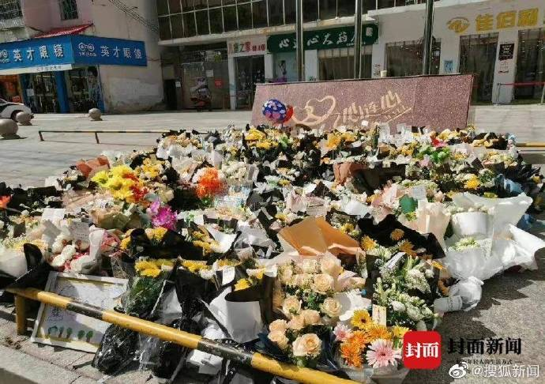
苏格兰免费为女性提供生理期用品
看到某些男权说应该呼吁抗衡联合利华，而不是要求免税的……佩服他们的造谣能力，还一群跟着坚信不疑。国产可不止抗衡联合利华，根本就是吊打，因为联合利华压根没有卫生巾品牌。
【辟谣】谣言：我国卫生巾产品被国外资本垄断。联合利华有卫生巾品牌。
【事实】：前十大品牌中，截止2019年国有品牌占比提高至75%，外资品牌仅占25%。不存在所谓的外资垄断。
十大品牌分别是:七度空间(恒安国际)、苏菲(尤妮佳)、护舒宝(宝洁)、ABC(广东景兴)、高洁丝(金佰利)、乐而雅(花王)、洁婷(湖北丝宝)、自由点(重庆百亚)、洁伶(桂林洁伶)、好舒爽(福建恒利)、安尔乐(恒安国际)。其中前十大品牌中有六家是国有品牌。
四大外企尤妮佳、宝洁、金佰利、花王的品牌市场占有率合计仅为20.6%。一线高端品牌中，外企和国企品牌各占据半壁江山。中低端市场则主要被国有品牌把持。
（《卫生巾行业深度报告》 中泰证券）
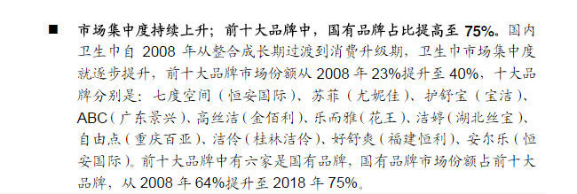
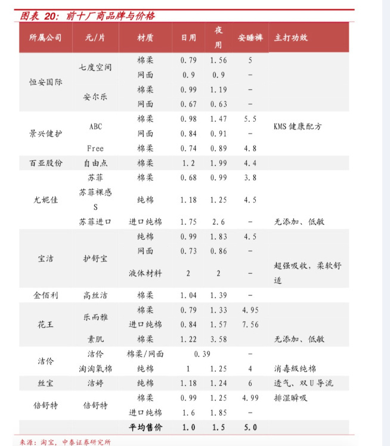
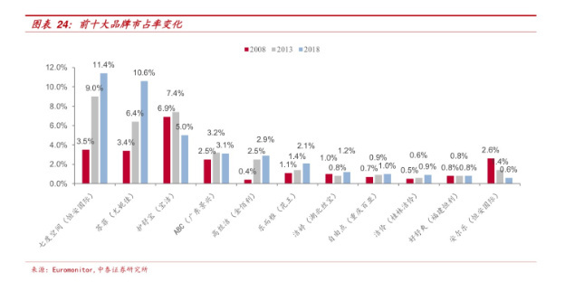
就非婚生育率而言，根据2018年的数据，经合组织国家中平均有41%的新生儿为非婚生育；在北欧和西欧地区，部分国家如丹麦、法国、冰岛、荷兰、挪威、瑞典，非婚生育率超过50%。
第二次人口转变与政治民主化进程和物质条件改善后个体的自我实现需求相伴而生。避孕技术的发展、性革命与性别平等运动，特别是其中女性力量的崛起，同样起到推动作用。个体亲密关系更加注重情感本身，不同生活方式和相处模式并存。
2018年经合组织数据显示，日本未婚母亲登记生育的比例仅为2.3%，韩国为2.2%，位列经合组织国家末尾。研究者认为，东亚儒家文化圈内强调婚姻和生育的联系，围绕未婚生育的耻辱文化观念以及法律政策歧视(包括中国过去的计划生育政策)共同造就了这一区域非婚生育率的低下。
在中国人口增长乏力，生育持续走低的背景下，国家对人口政策进行重大调整，先后出台全面二孩和非婚生子合法落户两项政策，减少了单身生育的政策性束缚。人口学家则预计，随着中国第二次人口转变进程的深入，不仅结婚年龄会继续推迟，同居、离婚和不婚更为常见，预计单身生育也会增加。
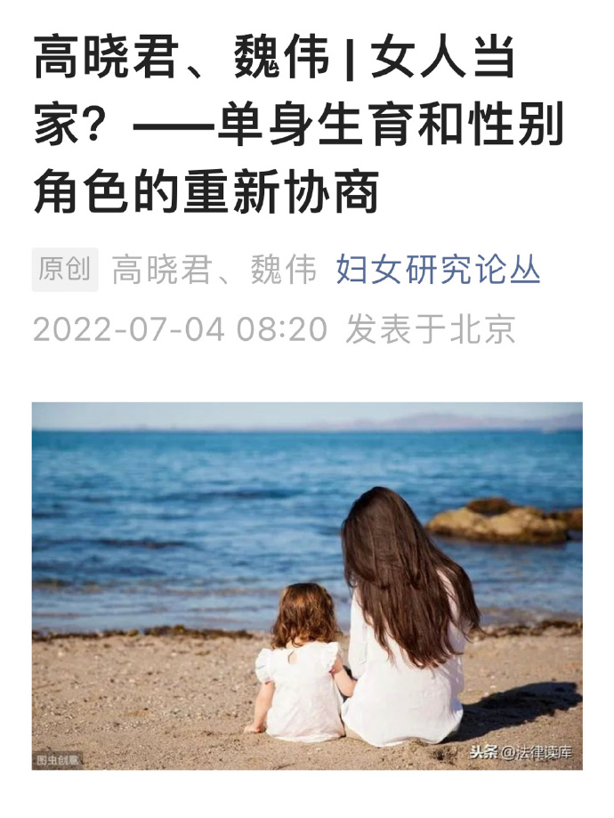
结婚多年的张先生一直没有生育，经过多方检查，才发现问题出在自己身上。在与张先生的交流中，福建省人类精子库负责人，福建省妇幼保健院、福建省妇产医院男性科林典梁副主任医师得知张先生从小就常常跟着爸爸去泡温泉，一直到成年，而正是这一行为影响了精子的生成功能。其实张先生的情况并不是个例。林典梁副主任医师指出，从福建目前精子库捐献的精子来看，合格率并不高，符合冷冻保存的条件，适合作为供精使用的合格精源仅约30%。
(福建卫生报)
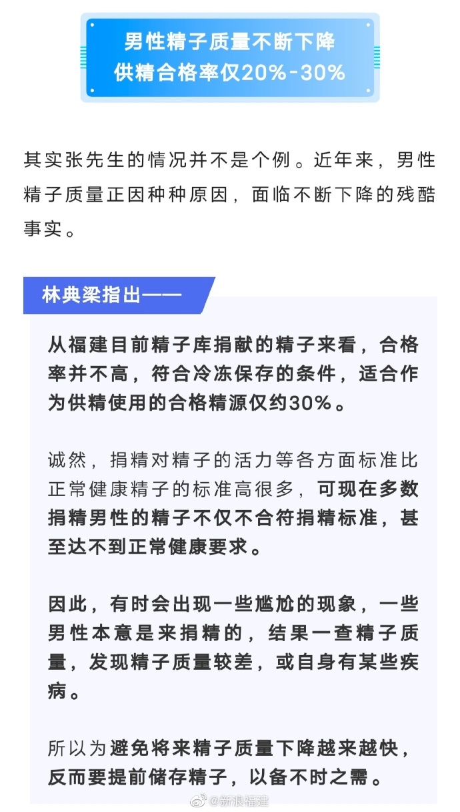
在育儿照料方面，居民每天陪伴照料孩子生活的平均时间为36分钟，其中男性17分钟，女性53分钟。从护送辅导孩子学习时间来看，居民每天护送辅导孩子学习的平均时间为9分钟，其中男性6分钟，女性12分钟。这都从侧面说明，父职参与水平明显低于母职参与水平。
父职参与指的是作为父亲的男性对家庭育儿的责任参与和投入。从参与维度来看，父职参与的主要方式包括经济支持、教导沟通、照料辅导与关怀陪伴，除此之外，父亲也通过为母亲提供支持而直接或间接参与到家庭育儿事务中。
但令人担忧的是，目前我国众多家庭中的父职参与严重不足，这需要引起高度关注和重视。
有调查显示，0～3岁婴幼儿在我国各类托幼机构的入托率仅为4%，远低于一些发达国家50%的比例，0～3岁婴幼儿照料的主体仍然是家庭。我国传统生育文化、性别文化和现实就业压力，加之长期以来家庭中的祖辈和母亲对育儿的照料投入，都压缩了父亲对孩子的照料机会，使得父亲在参与育儿照料的各方面都呈现出参与不足的状况。具体体现为参与的时间不足、参与科学育儿的意识不足、参与能力和水平不足，以及大众对于父职参与的理解和接纳不足。
首先，父职参与的时间不足。国家统计局《2018年全国时间利用调查公报》显示，就业工作活动的参与者每天平均时间为7小时41分钟，其中男性7小时52分钟，女性7小时24分钟；居民一天中自由支配活动平均用时3小时56分钟，其中男性4小时13分钟，女性3小时40分钟。可以得出结论，男性每天工作时间多于女性28分钟，但个人自由支配活动多于女性33分钟。在育儿照料方面，居民每天陪伴照料孩子生活的平均时间为36分钟，其中男性17分钟，女性53分钟。从护送辅导孩子学习时间来看，居民每天护送辅导孩子学习的平均时间为9分钟，其中男性6分钟，女性12分钟。这都从侧面说明，父职参与水平明显低于母职参与水平。
其次，父职的参与意识不足。部分男性仍停留在“男主外女主内”的差别化家庭安排的逻辑中，没有充分意识到父母均衡的亲子陪伴对孩子成长的重要性，以及父亲角色的不可替代性。
再次，父职的育儿能力不足。《中国家庭发展报告2016》显示，在1～5岁的儿童中，52.1%主要由母亲或者父母双方照料，其中44.4%主要由母亲照料。父亲参与0～5岁儿童日常照料和日常教育的比例很低。多数父亲在面对幼儿时无所适从，大多数男性缺乏科学育儿知识储备和经验，加上家庭其他成员的育儿投入，直接或间接导致父亲与孩子互动、照料孩子的机会减少。
最后，父职参与的社会接纳不足。我国传统儒家文化中的“子不教，父之过”，深刻说明了父亲在家庭中的重要职能之一是家庭教育，男性家长被赋予了“教”而非“养”的功能，对子女的照料常常落在母亲身上，传统中国家庭育儿模式的性别化逻辑可见一斑。

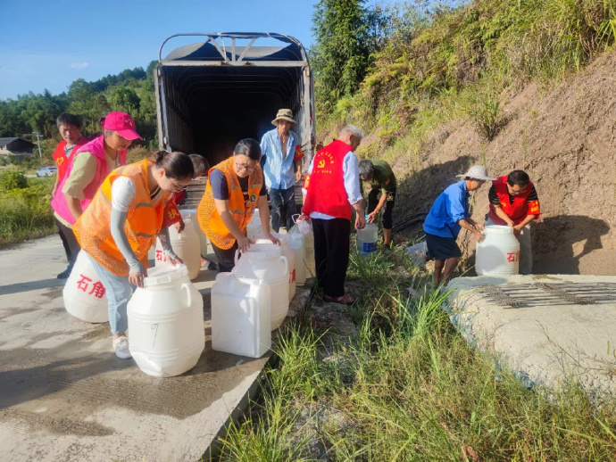
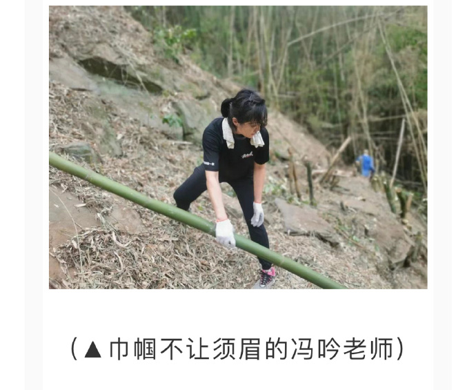
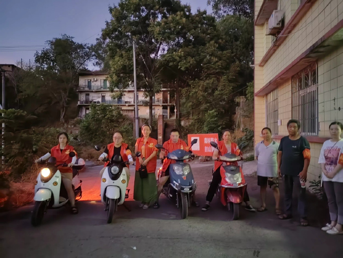
近日，芬兰总理桑娜·马林（Sanna Marin）因“热舞视频”“官邸不雅照”陷入争议。8月29日，美国前国务卿希拉里在推特上引用了一句流行语，声援马林让她“继续跳舞”，并附上了她自己早前跳舞的照片。马林很快就回文：“谢谢你，希拉里·克林顿。”

🌸